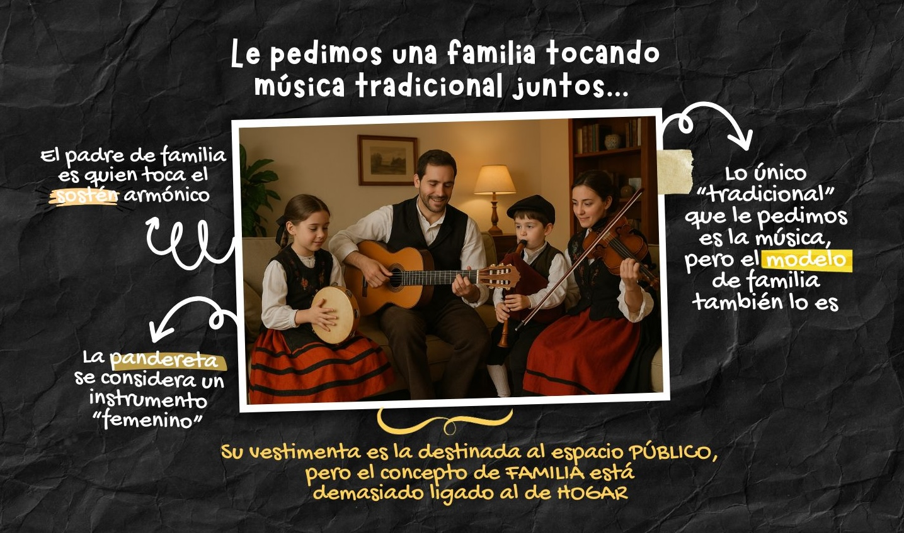
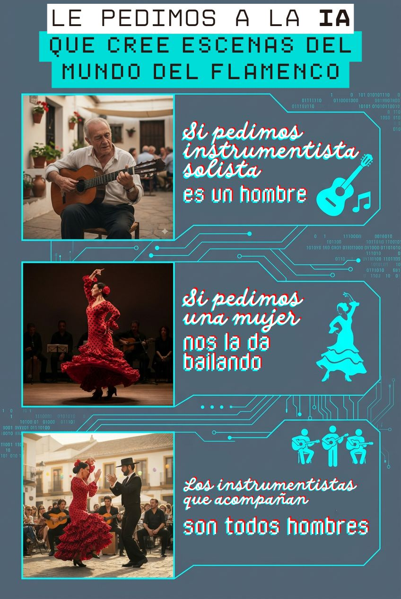
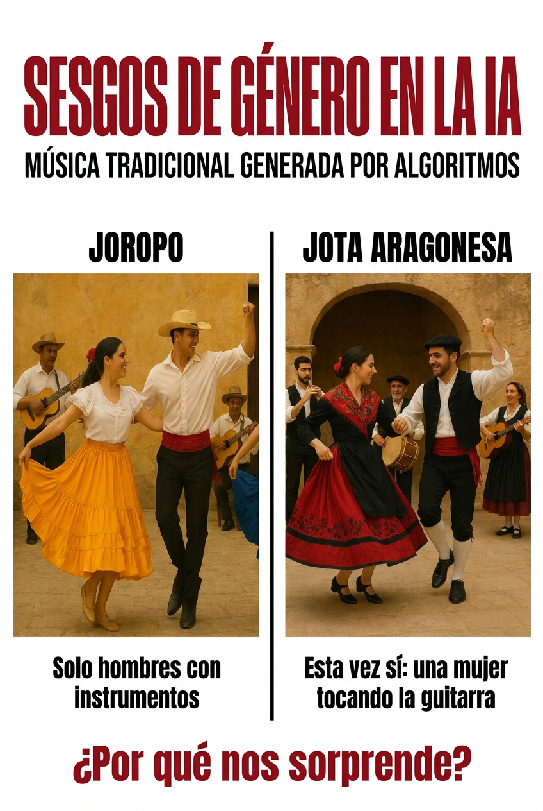

Infografías elaboradas en el aula sobre los sesgos de género y culturales detectados en herramientas de inteligencia artificial aplicadas a la música y a las músicas populares.
En el marco del proyecto de Aprendizaje-Servicio "Interpretación Musical y Prevención de Violencia de Género", el alumnado de la asignatura Antropología y Folklore (Grado en Musicología, Universidad de Salamanca) ha realizado un análisis crítico de los sesgos presentes en sistemas de inteligencia artificial generativa cuando se les solicita producir contenido relacionado con la interpretación musical y las músicas populares.
Los sistemas de IA entrenados sobre datos masivos de internet reproducen —y en ocasiones amplifican— las asimetrías de género y los estereotipos culturales presentes en los discursos musicales históricos. Identificar estos patrones constituye un primer paso imprescindible para una relación crítica con estas tecnologías en contextos educativos y de investigación musicológica.
Las infografías que se presentan a continuación son el resultado de ejercicios prácticos de aula en los que el alumnado consultó diferentes herramientas de IA generativa (texto e imagen) con prompts relacionados con géneros musicales populares —flamenco, jota, joropo, músicas familiares—, y documentó y analizó las respuestas obtenidas desde una perspectiva de género y de diversidad cultural.
Haz clic en cada imagen para ampliarla.

AmpliarAnálisis de cómo los sistemas de IA asocian la práctica musical doméstica con roles de género diferenciados: la mujer como transmisora informal y el hombre como músico profesionalizado.

AmpliarExploración de los estereotipos visuales y textuales que la IA reproduce al representar el flamenco: hipersexualización de la bailaora, invisibilización de las tocaoras y cantaoras.

AmpliarAnálisis comparativo de cómo la IA representa dos géneros de música popular iberoamericana —la jota aragonesa y el joropo venezolano-colombiano— y los patrones de invisibilización de intérpretes femeninas.
Los grandes modelos de lenguaje (LLM) y los sistemas de generación de imágenes han sido entrenados con corpus masivos extraídos de internet, los cuales reflejan décadas de discurso musical androcéntrico. En el ámbito de las músicas populares, esta tendencia se manifiesta de manera especialmente marcada: los géneros de raíz folclórica e iberoamericana aparecen reducidos a sus figuras masculinas canónicas, mientras que las mujeres quedan relegadas a roles ornamentales o domésticos.
El concepto de sesgo algorítmico hace referencia a la tendencia de los sistemas de IA a reproducir y reforzar desigualdades preexistentes en los datos de entrenamiento. En el contexto musical, estos sesgos afectan a múltiples dimensiones: la representación de género en intérpretes, la jerarquización cultural entre géneros musicales, y la asociación de determinados instrumentos o registros vocales con categorías de género.
El trabajo desarrollado en esta asignatura parte de la premisa de que una formación musicológica crítica en el siglo XXI debe incluir la capacidad de identificar, nombrar y cuestionar los sesgos que los sistemas de IA trasladan al conocimiento musical. Solo desde ese reconocimiento puede plantearse un uso pedagógicamente responsable de estas herramientas.